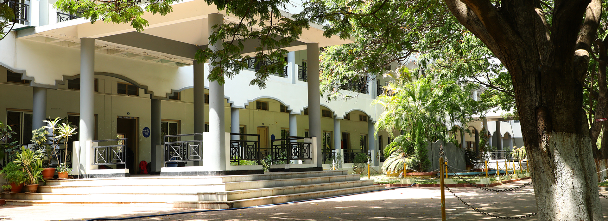
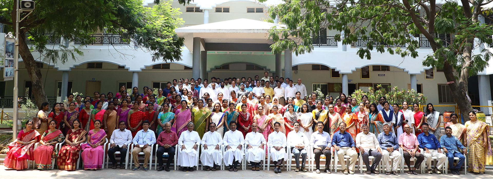
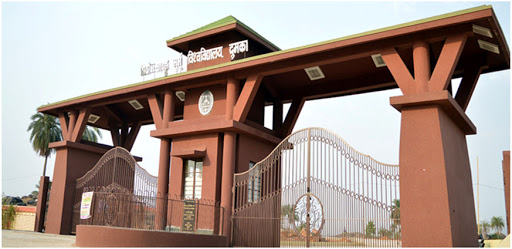
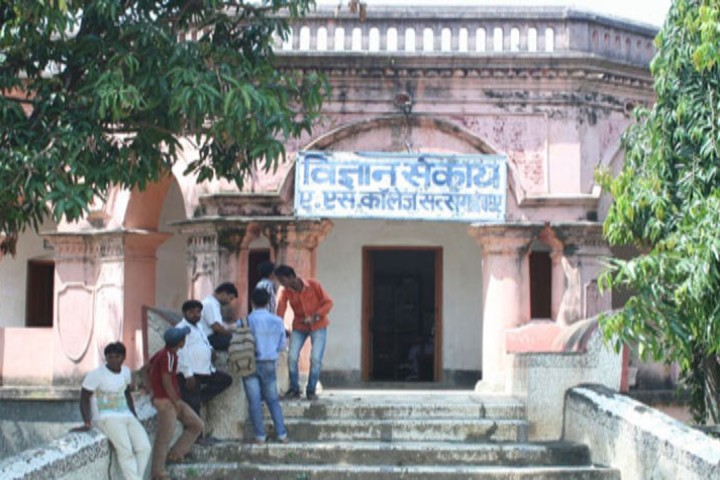
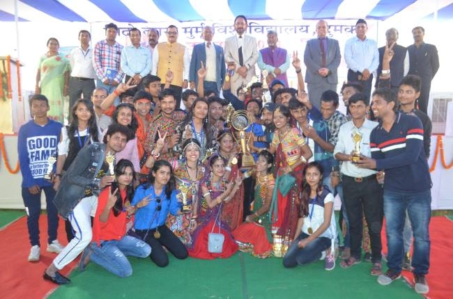
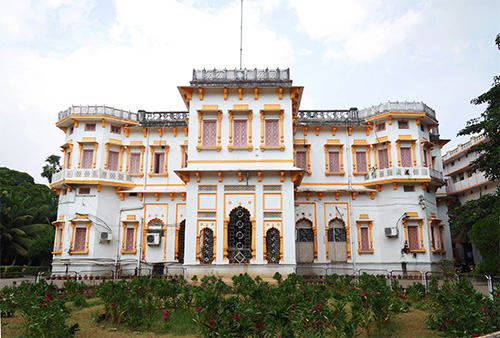
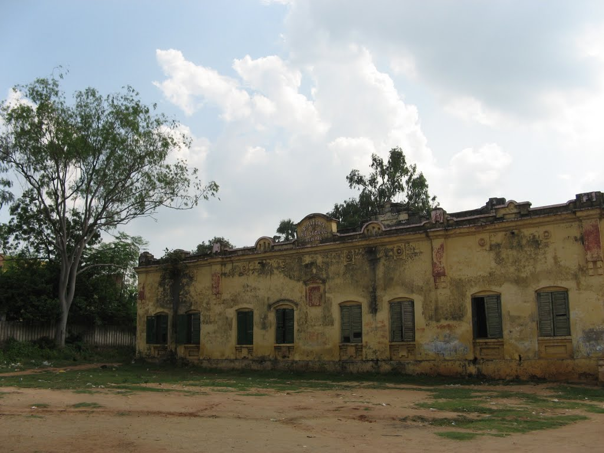
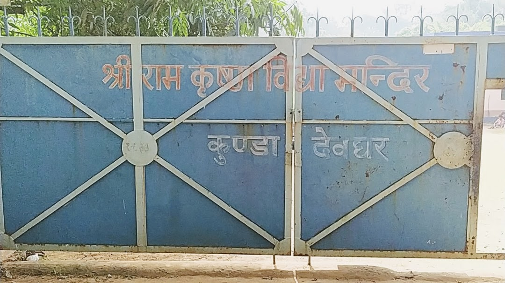
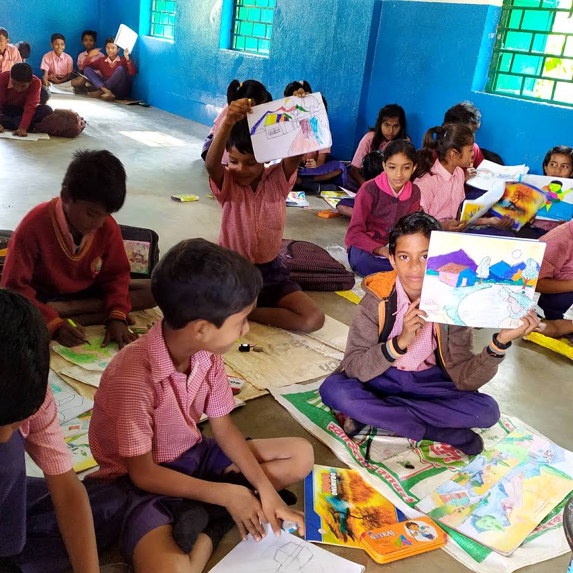
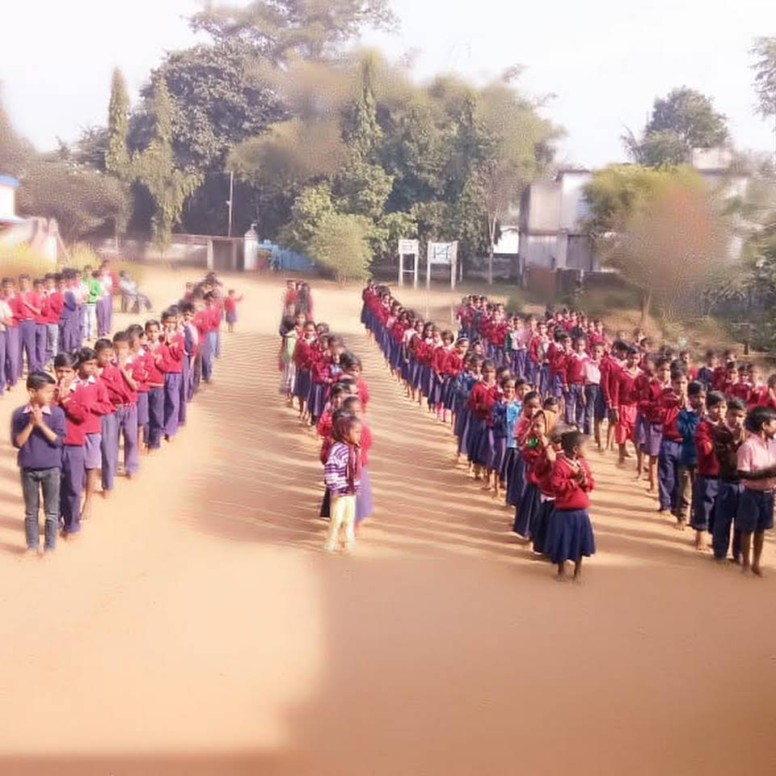

Loyola Academy, Secunderabad, Telangana
Loyola Academy (LA) is managed and administered by the Andhra Jesuit Province, belonging to the Society of Jesus, an international Catholic Religious Order. Loyola Academy Degree and Post Graduate College as well as Loyola Academy Junior College were founded by Rev Fr T. Baliah SJ, in 1976 in Alwal, Secunderabad, Telangana, India.
After the immense success of Loyola Chennai the Andhra Jesuit Province decided to intensify its efforts and focus on setting up a world class academy at Hyderabad. Hence, the idea of Loyola Academy was born. The support received from Loyola Chennai alumni and other sources only strengthened the project.
The Department of MCA was set up at Loyola in 1993, and offers 1 course in Master of Computer Application.
I have secured 90% in Master of Computer Application (MCA) examinations during the academics year 2016-2019.
After the immense success of Loyola Chennai the Andhra Jesuit Province decided to intensify its efforts and focus on setting up a world class academy at Hyderabad. Hence, the idea of Loyola Academy was born. The support received from Loyola Chennai alumni and other sources only strengthened the project.
The Department of MCA was set up at Loyola in 1993, and offers 1 course in Master of Computer Application.
I have secured 90% in Master of Computer Application (MCA) examinations during the academics year 2016-2019.


Sido Kanhu Murmu University, Dumka, Jharkhand
Situated in one of the most backward regions of India with a substantial tribal population, Sido Kanhu Murmu University is committed to provide easy access to quality education to the poor students of Santhal Pargana. The University, ever since its inception, has set the highest standards of excellence and quality which go hand in hand with the dream and vision that the University cherishes. It aims to grow further as a diverse and socially responsible centre of learning and research and provide high quality of scholarship and equal opportunity for all.
I studied at A S College, Deoghar a constituent unit under Sido Kanhu Murmu University during the period 2012-2015.
I have secured 76.08% in Bachelor of Computer Application (BCA) examinations.
I studied at A S College, Deoghar a constituent unit under Sido Kanhu Murmu University during the period 2012-2015.
I have secured 76.08% in Bachelor of Computer Application (BCA) examinations.



Bihar School Examination Board, Patna, Bihar
The Bihar School Examination Board (abbreviated BSEB) is a statutory body under section 3 of Bihar School Examination Act - 1952 which is functioning under Government of Bihar devised to conduct examinations at secondary and senior secondary standard in both government and private schools belonging to state of Bihar on the basis of syllabus as
prescribed by the Government of Bihar. It is headquartered at the capital of the state, Patna during the period of 2010-2012.
I secured 70.08% in my final Class XII State Board examinations.
I secured 70.08% in my final Class XII State Board examinations.


R. MITRA +2 SCHOOL, Deoghar, Jharkhand
R. MITRA +2 SCHOOL DEOGHAR was established in 1861 and it is managed by the Department of Education. It is located in Urban area. It is located in DEOGHAR block of DEOGHAR district of Jharkhand. The school consists of Grades from 8 to 12. The school is Co-educational and it doesn't have an attached pre-primary section.
I studied at R. MITRA +2 SCHOOL DEOGHAR during the period 2007-2009.
I have secured 71.8% in my final Class X State Board examinations.
I studied at R. MITRA +2 SCHOOL DEOGHAR during the period 2007-2009.
I have secured 71.8% in my final Class X State Board examinations.

Sri Ramakrishna Vidya Mandir, Kunda, Deoghar
It is located in Urban area. It is located in DEOGHAR block of DEOGHAR district of Jharkhand. The school consists of Grades from 1 to 10. The school is Co-educational and it have an attached pre-primary section. The school is surrounded in nature and is not using school building as a shift-school.
I studied at Sri Ramakrishna Vidya Mandir, Kunda, Deoghar during the period 1999-2007. I was continuously monitoring my classes and actively participated in inter-house competitions like quiz, essay writing and sport events.
I studied at Sri Ramakrishna Vidya Mandir, Kunda, Deoghar during the period 1999-2007. I was continuously monitoring my classes and actively participated in inter-house competitions like quiz, essay writing and sport events.


